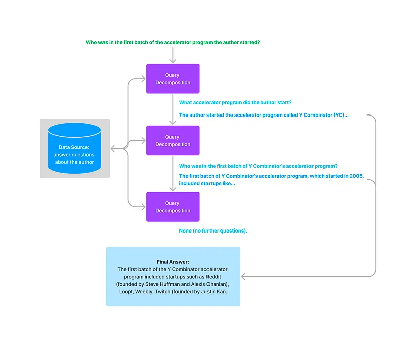
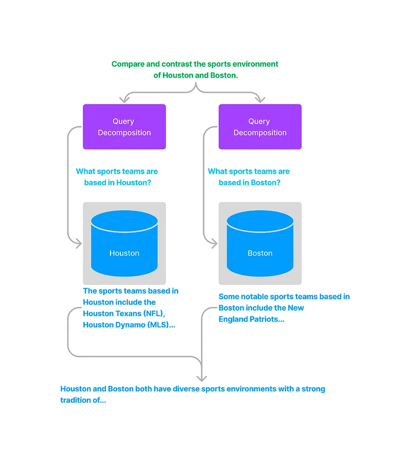
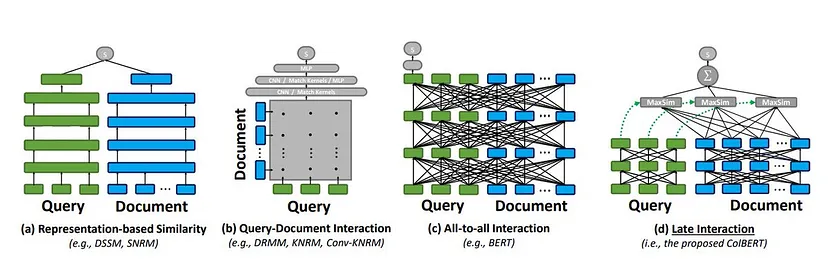
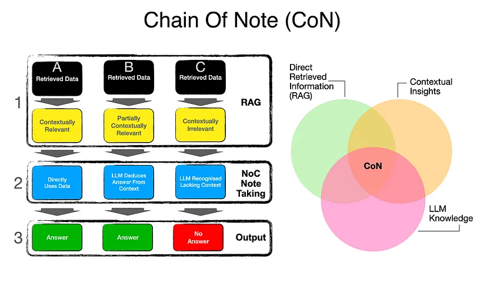

From Basic to Advanced RAG: Every Step of the Way

RAG, or Retrieval Augmented Generation, provides LLMs with the ability to retrieve information from one or multiple data sources and use that information to answer user queries. Setting up a basic RAG system is relatively straightforward; however, developing a robust and reliable system presents numerous challenges—particularly when optimizing for computational efficiency.
In this blog, we’ll explore common pitfalls in developing RAG systems and introduce advanced techniques to enhance retrieval quality, minimize hallucinations, and tackle complex queries. By the conclusion of this post, you’ll have a comprehensive understanding of how to construct advanced RAG systems and overcome challenges along the way.
Basic to Advanced RAG
Below is a diagram illustrating the basic flow of RAG. This typical setup involves the sequence
Query → Retrieval → Answer
Basic RAG Flow
The basic RAG flow involves the following steps:
- Converting the query into an embedding using an embedding model.
- Performing similarity search within a database of the data source.
- Selecting the top relevant documents.
- Feeding the retrieved documents into an LLM to generate the final answer.
- Exportable, clean HTML, CSS, and JS code
In summary:
Query → Query Embedding → Similarity Search → Retrieval → Context → Answering
Each stage has potential failure points:
- Query: The user might provide a poorly framed or ambiguous query.
- Query Embedding: The embedding model might fail to generate a representative embedding.
- Similarity Search: It may miss relevant documents or retrieve irrelevant ones due to database limitations.
- Retrieval: Retrieved information might lack proper context.
- Context: The LLM might improperly use the retrieved information or rely too heavily on prior knowledge.
To create a reliable RAG system, we need to enhance every stage. This advanced approach transforms the basic flow into:
Advanced RAG Flow

Each green box in the advanced flow diagram introduces components designed to address specific points of failure. Let’s explore each enhancement in detail.
Query Transformation
User queries are often ungrammatical, ambiguous, or ill-framed, and some queries require multi-step reasoning to answer accurately.
Handling Poorly Framed Queries
An LLM can reframe such queries, making them more precise and structured.
Multi-Step Query Decomposition
For complex queries requiring logical or analytical reasoning, we can decompose the query into smaller, manageable sub-queries:
- Break the query into sub-queries.
- Process each sub-query using the basic RAG flow.
- Feed the answers to the LLM alongside the original query to synthesize the final answer.
Example: For the query, “Is the average summer temperature in Berlin higher than in 2005?”:
- Generate sub-queries: “What is the current average summer temperature in Berlin?” and “What was the average summer temperature in Berlin in 2005?”
- Use the answers to derive the final conclusion.
Query decomposition ensures that even if relevant information isn’t explicitly stated in the data, the system can still derive answers using analytical reasoning.
Query Routing
When multiple data sources exist or documents are grouped for compact retrieval, queries must be routed appropriately to maximize relevance.
Process
- Assign a description to each document source, summarizing its contents (e.g., “All data about Houston sports teams”).
- Use an LLM to determine which sources to query based on the user’s input.
- Generate sub-queries tailored to the specific sources.
Example: If querying both Houston and Boston data sources, the system:
- Queries each source independently.
- Combines the results into a cohesive answer.
Query routing can also extend to tools, APIs, or agents, allowing dynamic parameter generation for enhanced task-specific outputs.
Advanced Retrieval Techniques
Improving retrieval quality is crucial for better RAG performance. Two advanced methods are:
Dense Passage Retrieval (DPR)
Typically, the same embedding model encodes both queries and documents. However, general-purpose models often fail to represent the nuances needed for specific tasks.
DPR addresses this by:
- Using separate encoders for queries and documents.
- Training on question-answer pairs with a Siamese objective for optimized embeddings.
CoBERT
CoBERT surpasses standard cosine similarity and even DPR by:
- Avoiding single-dimensional embeddings.
- Tokenizing queries and documents and enriching word embeddings.
- Using pairwise similarity across all tokens to create a correlation matrix.
Benefits: CoBERT captures fine-grained token-level relevance. For example, a query like “Gross revenue of all Company X products in 2005” involves multiple aspects (‘Gross Revenue’, ‘all products’, ‘2005’). Token-level comparisons provide nuanced matching, avoiding noisy or incomplete retrievals.

Implementation:
- Tokenize queries (“q1, q2, q3…”) and documents (“d1, d2, d3…”).
- Generate enriched embeddings (“x1, x2, x3…” and “y1, y2, y3…”).
- Calculate a correlation matrix and derive the MaxSim score by taking the maximum value across rows and summing these values.
Reranking and Post-Processing
Reranking
To consolidate results:
- Retrieve top-k results using different methods (e.g., dense embeddings, BM25).
- Use algorithms like Reciprocal Rank Fusion to merge and re-rank the results.
Chain of Note (CoN)
- Chain of Note (CoN)Reducing LLM hallucinations.
- Handling conflicting or partial information.
- Merging LLM knowledge with retrieved content.
How it works:

- An LLM annotates key points from each retrieval, focusing on relevance.
- These notes serve as intermediate steps, reducing errors in generating final answers.
Advanced Example: When conflicting information exists, or retrieved documents are partially relevant, CoN enables LLMs to cross-check and synthesize precise answers.
Conclusion
By addressing potential pitfalls in: Query → Query Embedding → Similarity Search → Retrieval → Context → Answering we can create robust RAG systems. Techniques like query transformation, query routing, DPR, CoBERT, reranking, and Chain of Note significantly enhance retrieval accuracy and reliability. With these advanced methods, your RAG systems can handle even the most complex queries with precision.
Don’t settle for basic RAG—build systems that stand out. We hope this guide helps you construct dependable and efficient retrieval systems. Happy building!